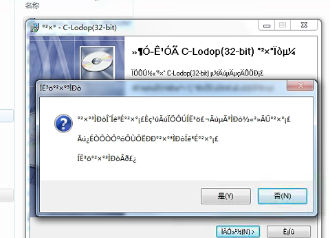
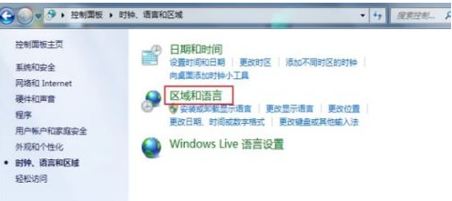
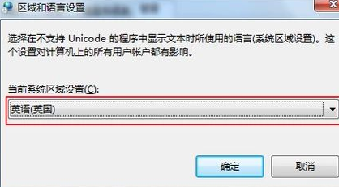
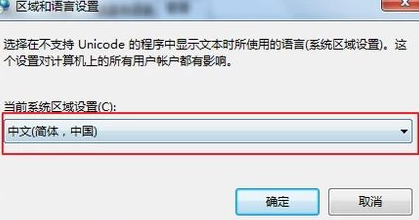
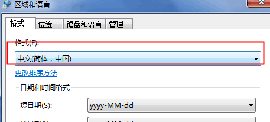

c-lodop安装界面乱码且注册无效
注册号无效一般有两种，一种是所有客户端都有水印，这种一般是注册号使用问题，常见的如：1.ip或域名注册，浏览器地址栏访问的不是注册的ip或域名。2.注册语句没有每次打印时执行。3.注册语句错误。等另一种是个别客户出现问题，一般和客户端电脑本身或打印机本身有关，这种一般表现为大部分电脑都注册号生效去水印了，少量电脑，或某个别电脑出现问题。
-----目前发现的注册号无效的----
参考排查一下http://www.c-lodop.com/faq/ph01.html
目前发现的注册号无效都在里面，逐条排查下其他条目
-----目前发现的注册号无效的----
其中第十一条，是软件乱码导致注册号无效，有两种可能，一种是系统故障“软件出现乱码”，另一种是操作系统修改区域语言与操作系统不一致。
第一种可用360修复软件乱码问题，第二种修改区域语言与操作系统一致。
最近遇到客户的某个用户电脑有水印，其他电脑正常，安装时是乱码，用360软件修复无软件乱码问题，且操作系统语句是中文操作系统，区域语言也是中文，但是就是出现了这个问题，该用户操作系统为win7，后客户找到了解决方法：
（百度经验里的，源自网络的解决办法）win7系统安装软件出现乱码怎么办
，https://jingyan.baidu.com/article/64d05a021231a3de55f73b8b.html?qq-pf-to=pcqq.c2c
-----该问题现象和解决办法----
现象：安装c-lodop时，界面是乱码，输出的水印不是乱码
界面乱码图：

百度经验里的网上解决方法：
控制面板——时钟、语言和区域——区域和语言
——在“区域与语言的”设置栏里点击“管理”，然后点击“更改系统区域设置”。
——将“当前系统区域设置”设置成“英语（英国）”，然后点击确定按钮，重启电脑。
——重启电脑后，找到语言设置位置，将“当前系统区域设置”设置成“中文（简体，中国）”，点击确定按钮，再次重启电脑即可。
注意事项：第一次重启电脑后整个系统通常全部都会变成乱码，所以重启前一定要通过图标记住设置语言的位置。
步骤图示：
1.控制面板——时钟、语言和区域——区域和语言

2.在“区域与语言的”设置栏里点击“管理”，然后点击“更改系统区域设置”。
3.“当前系统区域设置”设置成“英语（英国）”，然后点击确定按钮，重启电脑。

4.重启电脑后，找到语言设置位置，将“当前系统区域设置”设置成“中文（简体，中国）”，点击确定按钮，再次重启电脑即可。

主要方法描述：调整控制面板里的区域，当前系统区域先改成英文，重启电脑，再改成中文简体。
由于和电脑系统有关，这边无法还原验证问题，客户win7亲测这个网上方法有效。
-----其他软件乱码现象和解决办法----
一种是系统故障“软件出现乱码”，可用360修复软件乱码问题，

另一种是操作系统修改区域语言与操作系统不一致。
第二种修改区域语言与操作系统一致。

若出现乱码问题，可先尝试着两个方案，如果不行，可再用网上的那个方法。